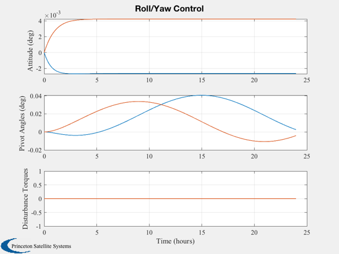

Contents
Design a roll/yaw controller using a double pivot
See also C2DZOH, QCR, Plot2D, TimeLabl, Geo
Constants
radToDeg = 180/pi;
Disturbance magnitudes
tImp = [0;0];
tStep = [10e-6;10e-6];
tOrbRate = [0;0];
Orbit rate
wo = Geo;
Momentum
hW = 500;
Plant [roll;yaw]
a = [0 wo;-wo 0];
bC = -eye(2);
bD = [0 -1;1 0]/hW;
Platform plant
aP = [0 wo;-wo 0];
bP = eye(2);
Design the controller
kC = QCR( a, bC, 1.e-7*[1 0;0 1], eye(2));
DispWithTitle(kC,'Gains');
disp('Closed loop eigenvalues')
s = eig(a - bC*kC);
DispWithTitle(s,'Eigenvalues');
Gains
1.0e-03 *
-0.316227766016838 -0.000000000000000
0.000000000000000 -0.316227766016838
Closed loop eigenvalues
Eigenvalues
1.0e-03 *
-0.316227766016838 + 0.072921158552912i
-0.316227766016838 - 0.072921158552912i
Control period
dT = 100;
Convert to discrete time
[aX,bD] = C2DZOH(a, bD,dT);
[a, bC] = C2DZOH(a, bC,dT);
[aP,bP] = C2DZOH(aP,bP,dT);
Simulate a step response
nSim = 864;
x = zeros(2,1);
xP = zeros(2,1);
xPlot = zeros(2,nSim);
aPlot = zeros(2,nSim);
uPlot = zeros(2,nSim);
tPlot = zeros(1,nSim);
t = 0;
for k = 1:nSim
uC = -kC*x;
c = cos(wo*t);
s = sin(wo*t);
uD = tImp + tStep + [c s;-s c]*tOrbRate;
xPlot(:,k) = x;
aPlot(:,k) = xP;
uPlot(:,k) = uD;
tPlot(k) = t;
x = a*x + bC*uC + bD*uD;
xP = aP*xP + bP*uC;
t = t + dT;
tImp = [0;0];
end
[tPlot,xLbl] = TimeLabl(tPlot);
Plots
yLbl = ['Attitude (deg) ';...
'Pivot Angles (deg) ';...
'Disturbance Torques'];
Plot2D(tPlot,[xPlot*radToDeg;aPlot*radToDeg;uPlot],xLbl,yLbl,'Roll/Yaw Control','lin',['1:2';'3:4';'5:6'])
